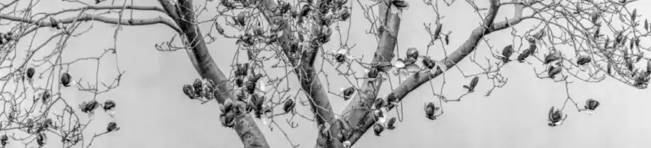
Magnolia | Mei ShengText: Shi Teng
Photos: Mei Sheng, Xu Peiwu, Xiao Xuan'an, Ta Ke, Ye Wenlong, Fang Guoping
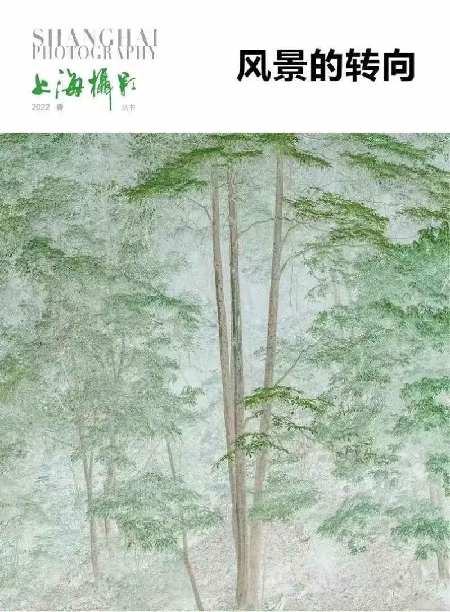
Extraordinary Color | Fang GuopingLandscape includes natural scenery and human landscapes. In Chinese writing, the word fengjing first appeared in the text New Accounts of the Tales of the World, from the Wei-Jin and Northern and Southern dynasties. It also appears in a poem by Tao Yuanming: the dew has settled and no mist drifts, the sky is high and the scenery is clear. In this line, fengjing combines two words, meaning the beautiful sight of air and light. In ancient Chinese tradition, landscape needs two elements, and neither can be missing: people and nature. Landscape is the tie that links people and nature. In different eras, the emphasis on the meaning and scope of landscape changes.
|
In ancient poetry, people usually used shanshui, mountains and waters, instead of the word for scenery. For example, picking chrysanthemums by the eastern fence, I quietly see the southern mountain, describes green hills and clear waters, and the image of living in a hidden, ideal world. In ancient literati painting, mountains and waters also appear most often. People live among the natural world and merge with the hills and waters. Landscape is both the subject and the supporting element. The image of a small bridge, flowing water, and a cottage shows this. The idea of heaven and man as one, and the way of nature, seeks exactly this kind of scene where feeling and view blend. So here, mountains and waters are a positive, bright, feeling-filled word that holds an important place in tradition. People are part of nature. To follow nature is the most harmonious way to live. But the mountains and waters of China today are not purely the style of ancient literati painting. They are more often photography based on personal character and independent thinking. The identity of landscape has quietly shifted.
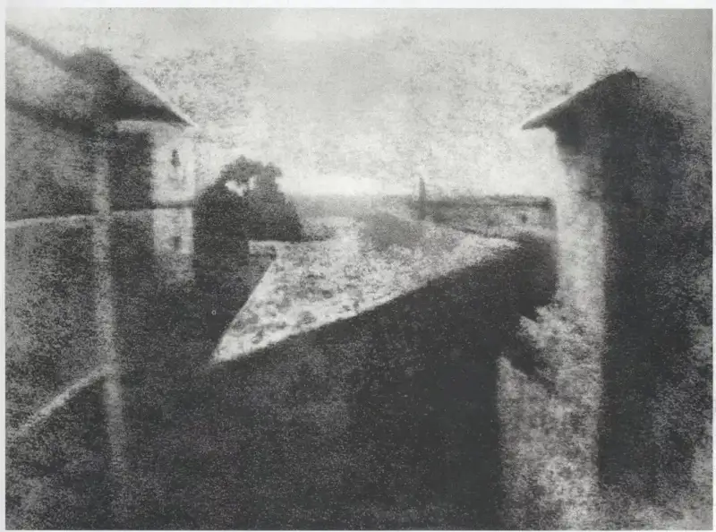
The world's first photograph, View from the Window (after restoration), about 1826, NiépceWhen photography was born, landscape photography began right away. Natural scenery, architectural views, and human geography entered the photographer's field of vision. Landscape photography usually means photography whose main subject is nature, or nature shaped by human work. Nature, as a carrier full of life, exists within a certain time and space. In the 1840s, with no examples to copy, the pioneers of photography explored in a firm, hazy way, guided by instinct and their own pleasure. Landscape was not only one of the earliest subjects. It was also a distinctive way of selecting and recording.
According to the records, the first permanent photograph ever made was a landscape. As early as 1836, the Frenchman Niépce used heliography to shoot the view outside his window, called View from the Window. So landscape photography has been a favorite of photographers since photography began. It not only brings beauty to people. It also records many fleeting moments and the changes of the world.
Early landscape photography can be divided into two broad types. The first is the work of European photographers, known for its delicacy and beauty. The second is the work of American western photographers, which takes the rugged, grand landscape as its root. For example, Watkins and Muybridge were among the first to photograph Yosemite Valley. There is also Moonrise by Ansel Adams, one of his most popular works.
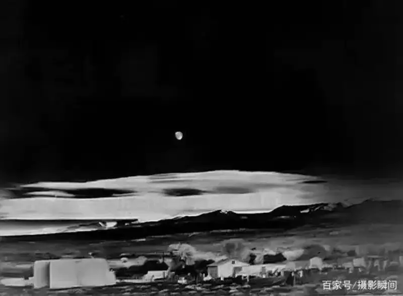
Ansel Adams, MoonriseAmong the many landscape works, we can see that Chinese landscape photography is closely tied to the development of the West, yet it differs from the Western style. This may come from China's thousands of years of tradition and history. In books on the history of Chinese photography, we see that early landscape photos often had a documentary function. For example, China Scenery, a book put together from photos taken at famous sites across China in 1910, is a model of using pictures to record places. Many people saw the scenery of the whole country through this album. Under the influence of traditional aesthetics, many photos show a poetic, painterly quality. A few photographers who held a strong position in landscape photography helped push this forward. For example, the famous pictorial photographer Lang Jingshan. In his composite photographs, he imitated Chinese painting, valued mood, and followed old methods. His work has both a personal artistic style and clear national character.
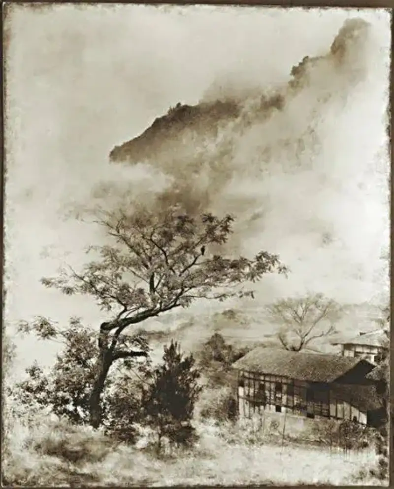
Cloud Peak and Bird Song, 1955, Lang JingshanBut landscape photography has changed as it continues to this day. Its methods, approach, context, and form have all shifted. Through their own cultivation, photographers turn their work into the language of artists. These works express not only a love of hills and waters. They also carry personal understanding and experience, and the thought and philosophy of a lifetime. Many photographers I know shoot landscapes. Some keep to tradition. Some inherit the past while framing the present, and place the feeling of a lifetime into the hills and waters. But many other photographers face nature and reflect another context and space through the landscape. They look back to tradition, stand in the present, break through themselves, and search for a relationship between people and landscape. In their work you can glimpse the subtle link between people and nature. Visual forms blend and overlap, forming their own unique language. As the saying goes, emptiness is not nothing, plainness is not colorless, and haze is not vagueness. The meaning lies beyond the picture. These deep, multi-sided portrayals show the spirit and mood of each kind of landscape. Li Ge, chairman of the China Photographers Association, once said that the highest state of photography is a unique viewpoint. Only by raising your own artistic cultivation can you more easily shoot landscape art that moves people, rather than beautiful junk.
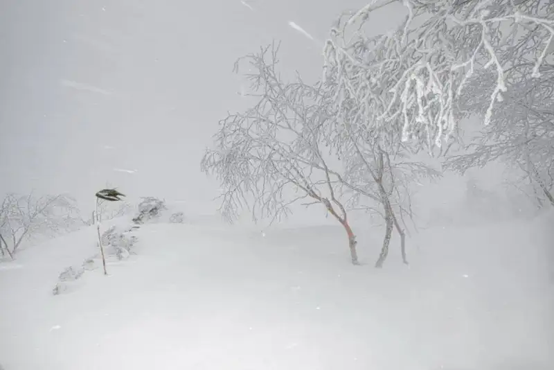
Fine Snow on Jade Branches, Mei ShengToday many photographers think only at the level of a good-looking photo. This is the lowest level of understanding beauty in the traditional sense. It is also one reason landscape photography has been criticized for years. In fact, I think true landscape photography is the inner understanding and feeling of the person for natural hills and waters. Art lies beyond form. Landscape lies beyond the landscape. We need to break through traditional thinking and renew the way we see beauty. China has thousands of years of history and culture. We may learn from some advanced Western ideas, but we should carry forward Chinese culture and blend it into landscape photography.
In this book, we selected several photographers from tradition to the present and gave case studies and conversations. We try to present a fuller, more objective picture of the new landscape. We explore the shift in landscape photography and its further possibilities. Through their work, we explain the meaning and current state of landscape photography today.
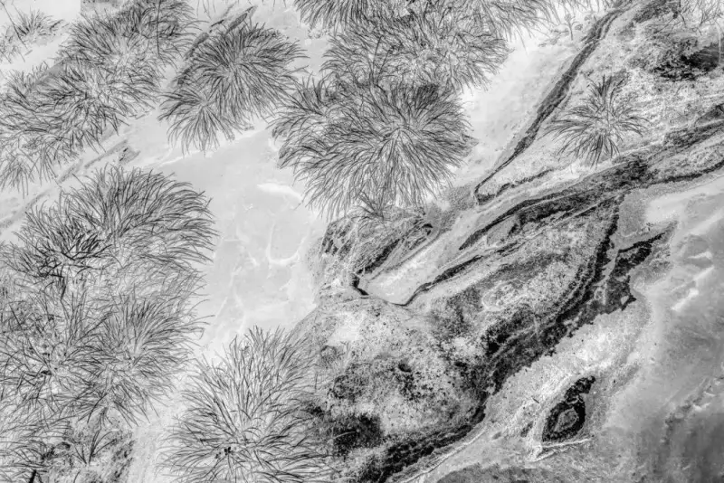
Sweet Flag, Mei ShengMr. Mei Sheng holds many titles, but the ones that interest me most are expert in World Heritage imaging and scholar-photographer. His major works include Searching for Dreams in the Ancient Capital: Chinese Imperial Culture series, and Pearls of the Sea: World Heritage series. He has written 14 books, including China's World Heritage, Wudang Mountains and the Forbidden City, and Land and State. In recent years he has focused on building and organizing the system of World Heritage imaging. From the view of cultural anthropology, and through the language of photography, he has photographed and studied the World Heritage sites across all seven continents and within China. But here I want to discuss his recent work, which has just come out: Mountains and Rivers Record, Plants and Trees Chronicle. This work reminds me of words by Fang Shishu in the Tianyong Studio Notes: mountains, rivers, plants, and trees are nature made, and this is the real world. To build a world from the heart, and guide the heart through the hand, this is the imagined world. The imagined becomes real, and lies between the presence and absence of the brush. That is why the brush of the ancients showed rugged hills, fine trees, living water, and moist stones, and built a kind of spirit and wonder beyond heaven and earth. These words fit Mei Sheng's photography work, Mountains and Rivers Record, Plants and Trees Chronicle.
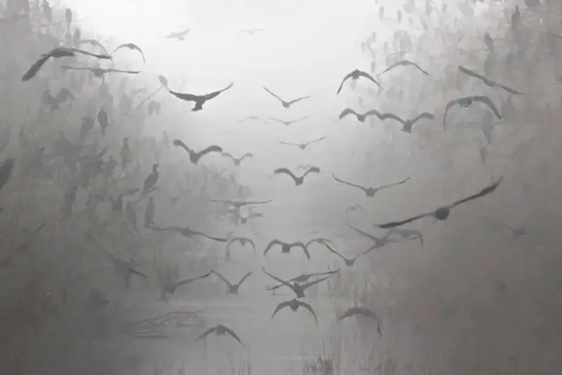
Cold Shadows by the Reed Pond, Mei ShengUnder Mr. Mei's lens, hills, waters, nature, and plants take on another meaning. This is both a holding to traditional landscape and a tribute to traditional culture. These works are carefully composed. Their poetic, painterly quality is clear, yet they hold endless depth. Facing these details, you seem to see not landscape or plants, but the human sense of awe for nature, and the questioning and reverence for all things under heaven. His work shows the mood of heaven and man as one. The human mind and thought have merged into the natural world. Nature is the person, and the person is nature. This state of total, self-forgetting unity is part of the essence of traditional culture. It is easy to see Mr. Mei's deep inner richness and his love of tradition. This series is a tribute to tradition and also strong evidence of reflection on the present.
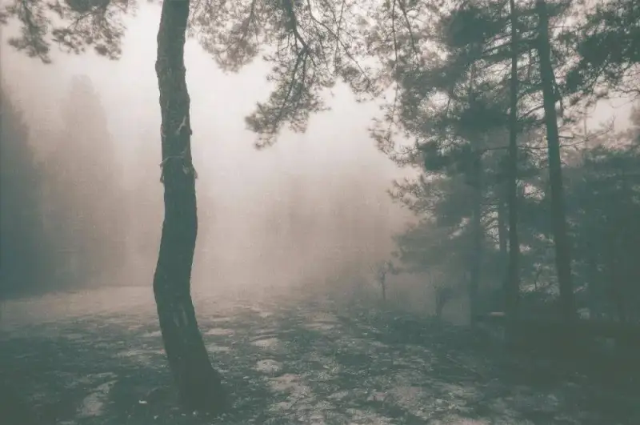
A Song of Leaving, Dreaming of Tianmu Mountain (Shaoxing, Zhejiang - Xu Peiwu)Mr. Xu Peiwu comes from Guangzhou. Starting in the 1990s, he spent 20 years completing his Guangzhou city image trilogy. After 2010 he traveled the land and kept shooting Lofty Ideas of Forests and Streams: A Tribute to Guo Xi and the Poet Immortal Li Bai. His works, especially the recent Poet Immortal Li Bai series, have a real back story. In 1984, Xu bought the book Li Bai: His Poetry and Inner Images by the Japanese scholar Matsuura Hisatomo at an old bookshop in Guangzhou. From then on, the free spirit, the joyful drinking, and the immortal wandering of the great High-Tang poet Li Bai entered his heart. Thirty years later, Xu began a photography project on Li Bai's poetry. He followed the tracks of the poet immortal. From 2013 to 2020, he went out through the frontier passes, entered Chang'an, climbed Mount Emei, wandered Tianmu Mountain, crossed the Yangtze five times, and crossed the Yellow River three times. With photos he made an unprecedented Illustrated Travel Record of Li Bai's Poetry. Over seven years, he visited the places Li Bai once described in his poems and recorded each one with his camera. Mr. Xu uses his lens to explore the cultural mood in the poet's work, now bold and free, now strange and soaring. With a unique contemporary artistic view, he explains the meaning of Chinese hills and waters and the spirit of the literati.
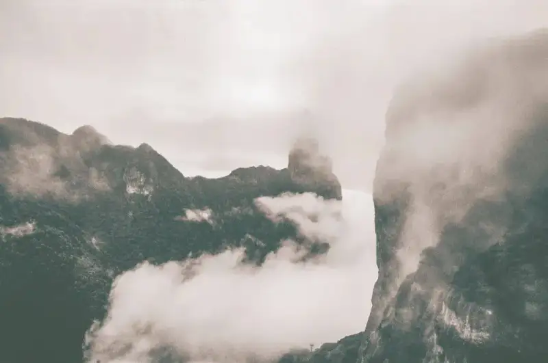
A Song of Leaving, Dreaming of Tianmu Mountain. The sea guest speaks of Yingzhou, where misty waves are hard to find. The men of Yue speak of Tianmu, glimpsed through flickering clouds. (Xianju, Zhejiang) Xu PeiwuAbout 1,000 poems by Li Bai survive today. The places they mention cover roughly half of modern China. If you build a photography project on the idea of poetic meaning, where do you start? Xu first carefully sorted out Li Bai's poems and the routes of his creative life, and walked in his tracks. His work shows the mood of an ink painting, yet it also breaks beyond the bounds of traditional culture. A contemporary view widens the subject of landscape. The poet of old has gone, but the human spirit he left is lasting. Mr. Xu uses images to look back at the past, pay tribute to the poet immortal, and reflect the present. So his work carries human feeling and warmth.
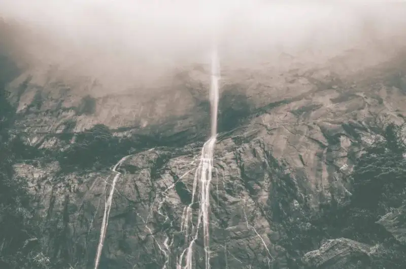
Looking at the Lu Mountain Waterfall. Its torrent plunges three thousand feet, as if the Silver River fell from the ninth heaven. (Lu Mountain, Jiangxi - Xu Peiwu).Xiao Xuan'an is an artist I have long admired. His work starts from landscape but enters the subject through a contemporary view. It is full of a sense of ritual and of deep thought. He is an artist who deeply fuses life and art. He adds his own views and philosophy to his work, for example through performance art and artificially assembled images. This conceptual photography is always tied to the land where he grew up: the Three Gorges. Among his many works, Three Gorges Memory is a very special set. Xiao says plainly that the Three Gorges are grand, and they are the place where he was born and raised. He has feeling for this place and a bond he cannot cut off. So he hopes, through images, to leave some unique memories of the Three Gorges. He wants to leave some marks in pictures for himself or for the next generation. This kind of landscape photography adds more human elements and makes the images warmer.
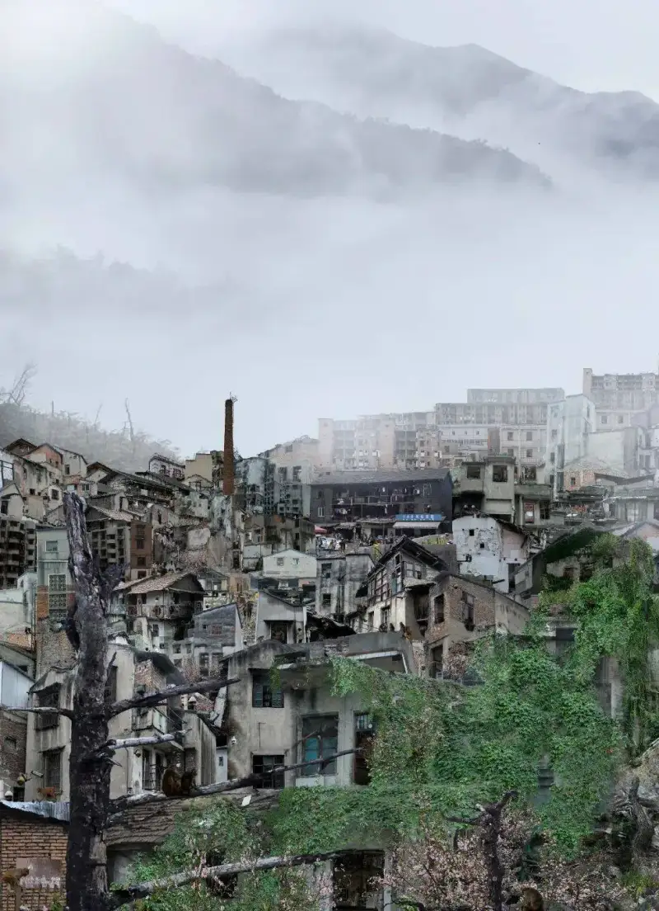
Three Gorges Memory, Xiao Xuan'anIn Three Gorges Memory, it is easy to see that the shots taken on 135 film have a strong grain. Yet the feeling of the images is delicate and moving. It is as if the artist's soft inner feeling, in pale tones, shows a faint sadness. It does not force emotion. It expresses the artist's own stance and views in a way that holds both reason and feeling. In these works, the old Three Gorges have gone. But the human, natural, and landscape scroll still faintly remains, kept in the photos. Mr. Xiao fuses the essence of Chinese tradition into the grand story of the Three Gorges and presents it in an exploratory way. At the same time, the work expresses itself through conceptual, documentary, performance, and installation means, and these elements blend into each other. The artist's care for the environment leaves fragments for the world to remember. Such images deserve more people's thought and discussion.
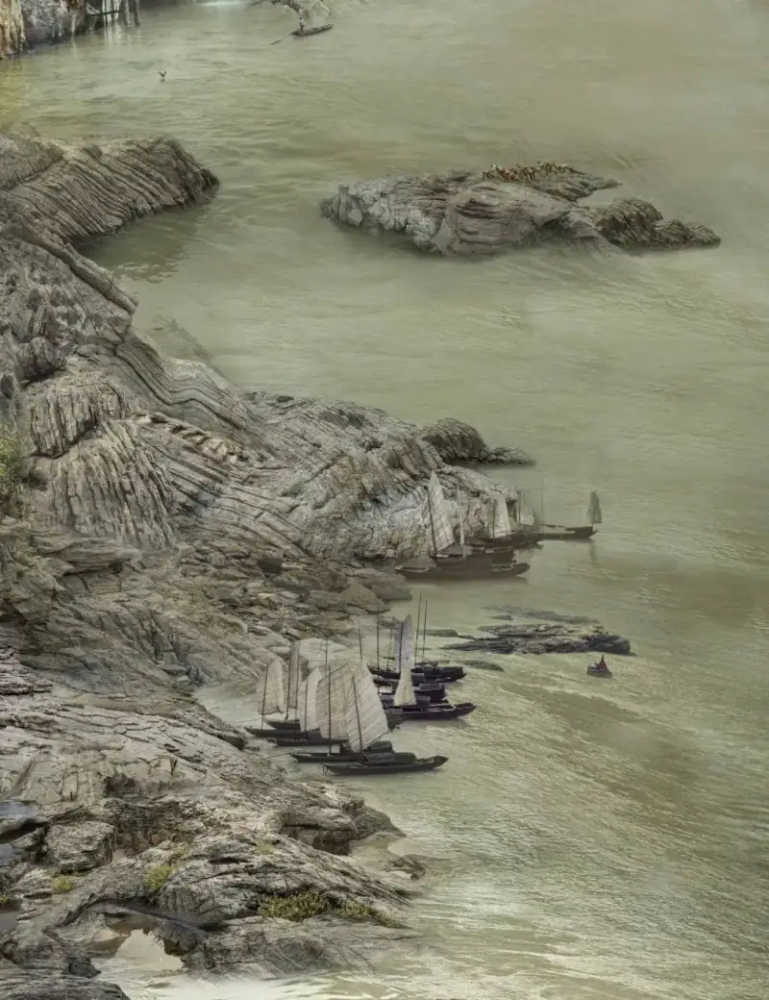
Three Gorges Feeling, Xiao Xuan'anTa Ke is a post-1980s photographer. He studied at the Central Academy of Fine Arts in China and at the Rochester Institute of Technology in the United States. His work generally starts from traditional texts. It focuses on searching for ruins and remaking memory. His breakthrough work, Examination of the Mountains and Rivers of Poetry, is both an artistic practice and his own transformation. Ta Ke says that seeking out the mountains, rivers, broken walls, and old roads named in the Book of Songs more than 2,500 years ago is like being drawn into a mysterious date with no partner there. It feels as if some unnamed force is behind him, shaping his feeling and the direction of his shooting. The hills, plants, stele forests, and caves in his lens echo the Chinese poetic classics of thousands of years ago, and they have charmed countless people.
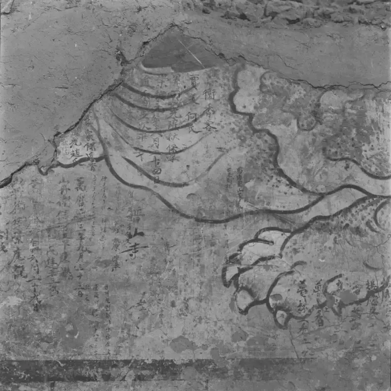
Fallen Slips, Ta KeBefore he shot Examination of the Mountains and Rivers of Poetry, the Book of Songs was always at hand. In 2005, when he flew to the United States to study, he took the Book of Songs onto the plane with him. This collection, which holds deep history and the wisdom of the ancients, raised new questions each time he opened it in a spare moment. The many beautiful images in the Book of Songs piled up in his mind and gave him the urge to travel the sites of the Book of Songs. When Examination of the Mountains and Rivers of Poetry came out, many people were struck by the way the photos cut through time and by the weight of the culture. When Ta Ke presents the work, he uses little written explanation. He lets the reader feel the images themselves. The subjects in the frames are not hard to tell. They all echo the Book of Songs from afar. So in his work, words feel unnecessary and pale. You only need to feel with your heart.
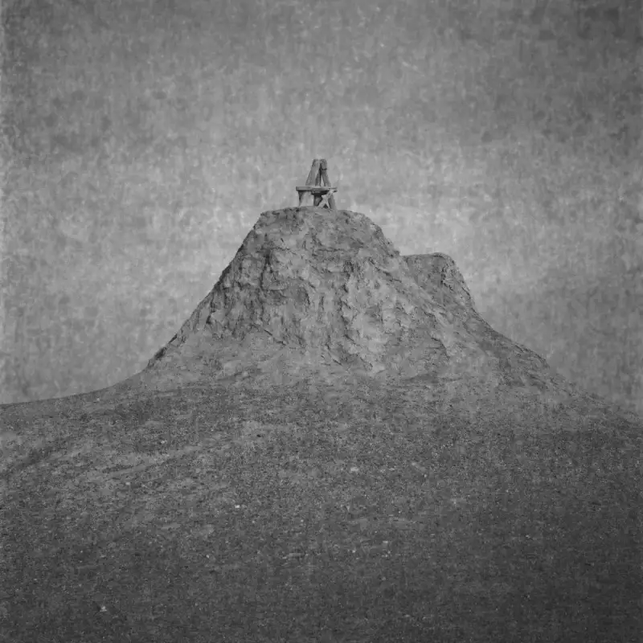
Fallen Slips, Ta KeThis time, when I selected his work, I saw a new series called Fallen Slips. Speaking of this new work, Ta Ke says plainly that Fallen Slips comes from the book Fallen Slips from the Sand by Luo Zhenyu and Wang Guowei. That book is a study of the wooden-slip documents collected by Aurel Stein during his expeditions in the Northwest. Flowing sand refers to the vast desert regions of the Northwest. Fallen slips refers naturally to the documents scattered within them. He says that when he walks the Hexi Corridor, he can clearly feel the exchange, clash, and settling of different cultures. He is interested in this historical clash of many cultures, so he made this new series.
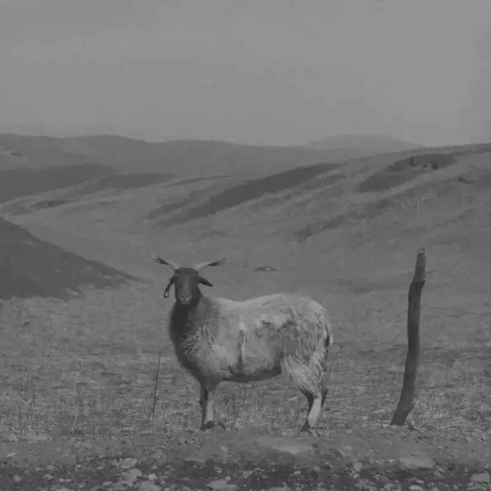
Fallen Slips, Ta KeTa Ke also says that his shooting in the vast Northwest is much like the way earlier people collected scattered slips. The places where he takes images and where the slips were dug overlap greatly. What he gets is often also broken slips and fragments. So to walk is to see and to think. To follow the tracks of the ancients is really to look into your own heart. In these photos, it is easy to see that his style and visual language still follow the cold tone and grayish color of his earlier Examination of the Mountains and Rivers of Poetry. It seems to put a distance between the viewer and history. In these photos, time seems to travel back, and when we face nature, landscape, and all things, we feel more thought and doubt. In truth, the landscapes Ta Ke shoots are a search within tradition and the long river of history. He looks for faint traces where the ancients once lived. Although much has gone, the layered marks of culture left behind have not disappeared. So here, landscape quietly turns into a new body and a new experience. We travel through time in the images and meet another self.
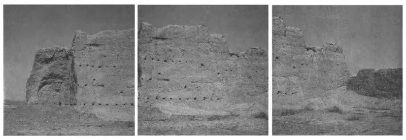
Fallen Slips, Ta KeYe Wenlong has worked in landscape photography for many years. From the time he picked up a camera, he has loved the hills and waters around him. This may have much to do with where he lives. He grew up at the foot of the beautiful Yandang Mountains in Wenzhou. The clear, lovely landscape of his home steeped and nourished him. In his life, nature is what his heart follows, so his lens always points at the land around him. Later he left home for Taizhou, but he still could not cut his love for hills and waters. Over the years he has taken a great many photos of hills, waters, and scenery. In his work, nature is both the greater self and the selfless state. The person merges into the environment, and feeling and scene blend in a way beyond words. From his early After the Fresh Rain in the Empty Mountain, to later Poetic Lines of Hills and Waters, New Eastern Landscape, and then Looking Back: Dwelling in the Fuchun Mountains, these works carry on the essence of Eastern culture in both scope and mood. He says plainly that he has long been fascinated by Chinese tradition. The cultural treasures left by the ancients are inexhaustible. To transform them through images is a wonderful thing. In his work, hills and waters carry human feeling and warmth. All of nature returns to the heart. What finally shows is the artist's observation and thought, his exploration and understanding of society, people, and the universe. The photo is still, but the philosophy flows. In Ye's work we also feel the flavor of Eastern Zen. That quality which seems silent yet speaks not only sets off human awe for nature. It also reveals more meaning beyond the hills and waters. So while he shoots landscape, Ye is really thinking about culture and its threads, and exploring the link between the ancients and the present. In his recent new work Winter Snow, this exploration seems to grow more abstract and weighty. Between the vast heaven and earth, all things are still, and only pure white snow falls on the human world. That state in which object and self are forgotten seems something we have seen in ancient painting and felt in ancient poetry.
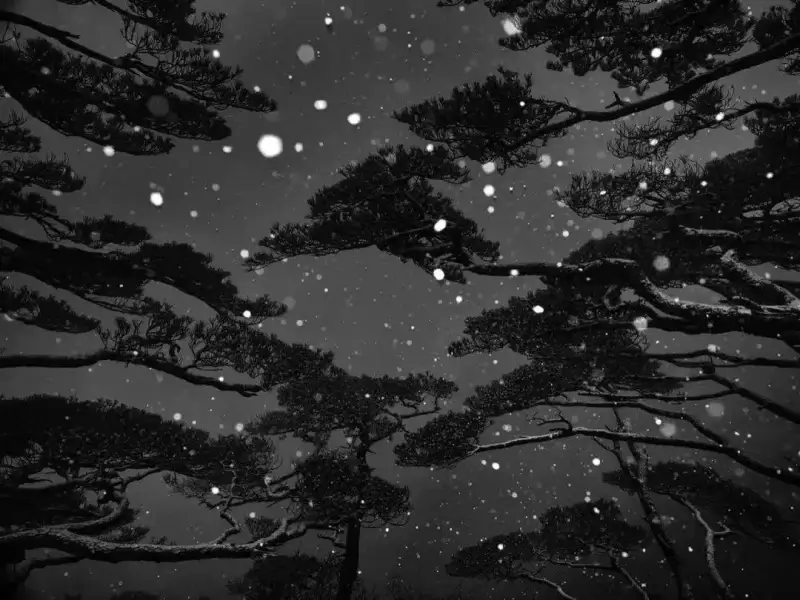
Ye Wenlong, Winter SnowIn Ye's work we also feel the flavor of Eastern Zen. That quality which seems silent yet speaks not only sets off human awe for nature. It also reveals more meaning beyond the hills and waters. So while he shoots landscape, Ye is really thinking about culture and its threads, and exploring the link between the ancients and the present. In his recent new work Winter Snow, this exploration seems to grow more abstract and weighty. Between the vast heaven and earth, all things are still, and only pure white snow falls on the human world. That state in which object and self are forgotten seems something we have seen in ancient painting and felt in ancient poetry.
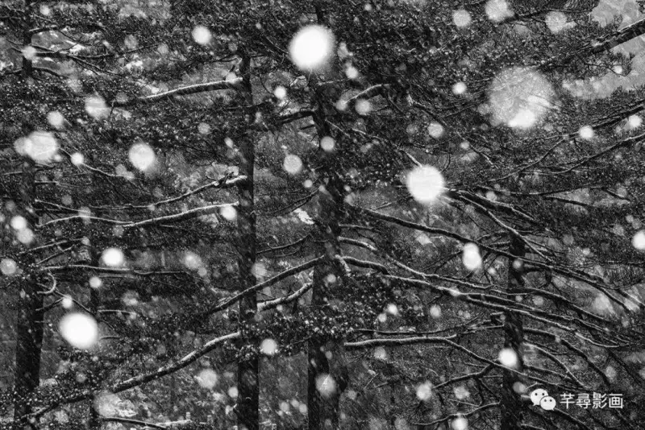
Ye Wenlong, Winter SnowYe Wenlong says that Winter Snow follows a kind of new landscape narrative. He gives it more story and an open ending. He also focuses more on how a carefully built field affects the viewer's looking and inner self. So we may treat such images as a series of experiments, and let them challenge the bounds of understanding and the power of philosophical feeling. In shooting, he hides the physical traits of the scene. He uses a personified voice to gaze at the intelligence behind all the myriad forms. From his words we can see that he is shooting snowflakes, yet feeling the philosophy of the ancients. This power cuts through and is also more readable. The image is subtle. It seems direct, but it is really indirect. Through landscape, Ye returns to his heart and seeks the origin. He forms a subtle link with the cultural roots left by the ancients. This process of seeking the past among the hills and waters is what moves people most.
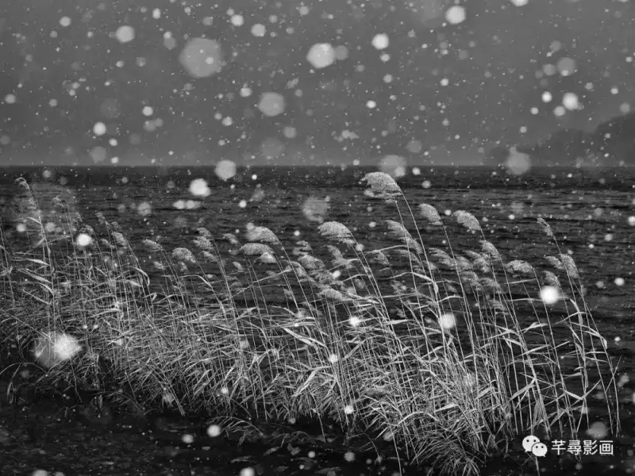
Ye Wenlong, Winter SnowAfter viewing Winter Snow, Wang Yangyang, a film critic from Zhejiang, wrote this: we need two different attitudes. One is to enter, and the other is to stand back. To enter is to vibrate with the artist's mood, take shape from the thing, and feel the situation he is in. To stand back is to wander beyond the image, and to look in history, reality, or the future for the clue or meaning of the image. Ye Wenlong brings Winter Snow into the world. It reveals the human heart and depicts human nature. It is a work of reflection on contemporary Eastern landscape photography, and a work of humanist spirit. It is also a work of strong Eastern mood. So the shift in the identity of landscape here is beyond doubt, because we see more possibilities.
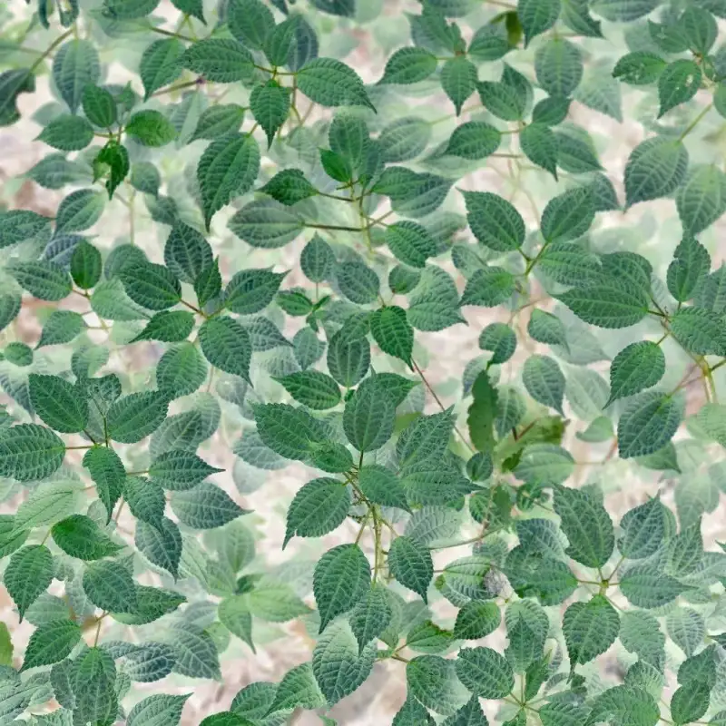
Fang Guoping, Extraordinary ColorFang Guoping is an artist born by West Lake. Deep down he is steeped in traditional culture and Eastern aesthetics. In his view, Chinese traditional aesthetics is both charming and very deep. To reflect all of this through photos would feel broad and pale, so he wants to use his lens and feel with his heart. His early works mostly leaned toward a beautiful mood. In the seemingly empty frames, person and scene blend. The person wanders within the painting, and hills and waters become the best backdrop. It is like a dream from which you cannot pull away. But among his many works, the ones that established his style and influence are the new landscape series he has shot in recent years, such as Extraordinary Color and Record of Investigating Things.
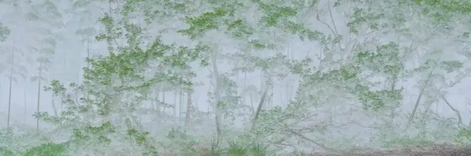
Fang Guoping [Extraordinary Color]The series Extraordinary Color takes the hills, waters, and plants of nature and turns them into pure green. This green is neither heavy nor pale, but elegant and fresh. It carries an unusual tone across the frame. Most of these images are shot from ordinary things: a clump of grass by the road, a tree on the street, even a clump of bamboo by a rockery in a park, or a banana tree by a wall. The frames are mostly simple and clean, with bright, comfortable tones. They are easy on the eye and worth looking at. As soon as this series came out, major media and online platforms published and shared it, and it gained much traffic and likes. Many people say that such photos look simple, yet they reach the heart at once. The aesthetics of Eastern landscape are shown here to the fullest. It turns out that a single tone can have such a unique visual effect. It seems creation does not require going far afield or seeking novelty. It requires a breakthrough on the existing basis.
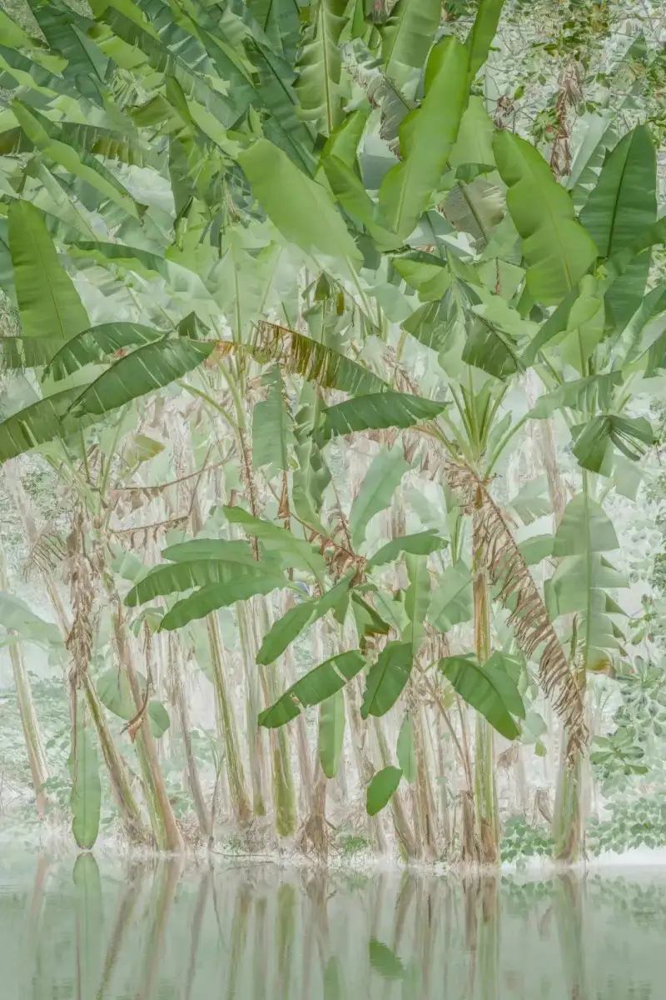
Fang Guoping, Extraordinary ColorBorrowing the language of green hills and clear waters lets us see, in the traditional colors of Chinese painting, an aesthetic potential that fits our times. The frames of Extraordinary Color grow from the traditional colors of Chinese painting, yet they rest on the ways contemporary society sees beauty. They make the tool serve expression, and join the frame to the imagined mood. Extraordinary Color is not a bright, dazzling long scroll of hills and waters. It is a warm, refined, slow unfolding. Such frames are a tribute to traditional painting and color, a praise of all of nature, and the subtlety of nature found by seeking and observing among the hills and waters.
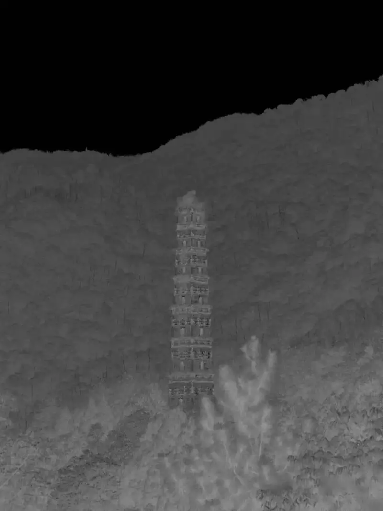
Fang Guoping, Record of Investigating ThingsIn Fang's other series, Record of Investigating Things, hills and waters turn into another form. They shed their colors and return to nature itself, dropping the transitions of white, black, and gray. He cleverly reduces the landscape to the minimal. Plants, stones, and mountains are all shown in a muted tone. The frames are clean, yet full of an unseen tension. In these photos, nature is silent, but powerful. The plants have lost their color, yet they become more readable and open to exploration. Here, hills and waters become a ritual symbol. Contemporary methods give the work its own independent character and charm. As Fang himself puts it: now that we have come this far, is composite pictorial photography that imitates tradition still worth continuing? It is worth exploring new ways to link photography with hills and waters. His effort and exploration confirm the artist's own understanding and deep feeling for landscape, nature, and hills and waters.
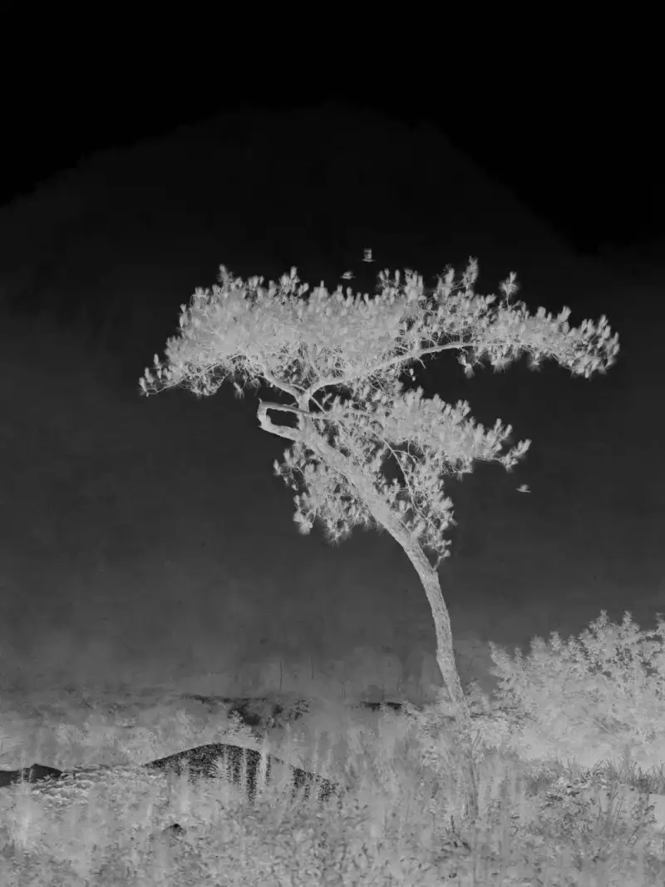
Fang Guoping, Record of Investigating ThingsWhen you climb a mountain, your feeling fills the mountain. When you look at the sea, your thought overflows the sea. Each instant under the landscape photographer's lens gathers the spirit of heaven and earth and the grandeur of hills and waters. It spreads the great beauty and the wordless language that the artist feels within. Chinese landscape photography, nourished and grown in the soil of Eastern aesthetics, wins through traditional culture and aesthetic value. It has in fact moved beyond the standards of Western photography. It shows the culture and heritage of our own people. The artists above are the best proof. The landscapes they shoot look through the present, trace the past, pay tribute to nature, and seek the best link between tradition and the contemporary. So the landscape here is no longer the old landscape. Its identity has quietly shifted. In the change, there is sound in movement and stillness, and beauty beyond words.
References: History of Photography, Landscape Photography and the View of Nature, China Scenery, and A History of Landscape Photography.
This article was commissioned by Shanghai Photography magazine. It selects work by five artists. Thank you to each teacher for your support.
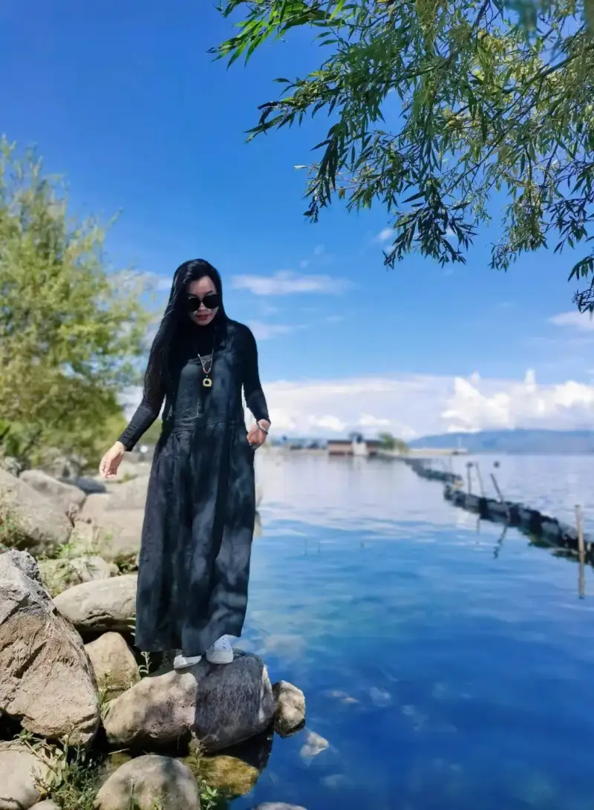
© About the author
Shi Teng Column writer, visual critic, independent curator, and screenwriter. Member of the China Photographers Association. Member of the Zhejiang Literature and Art Critics Association and the Writers Association. She won the Golden Wingbird Award for best curator at the 2017 Dali International Photography Festival, and the excellent curator award at the Lishui International Photography Festival in 2015, 2017, 2019, and 2021.